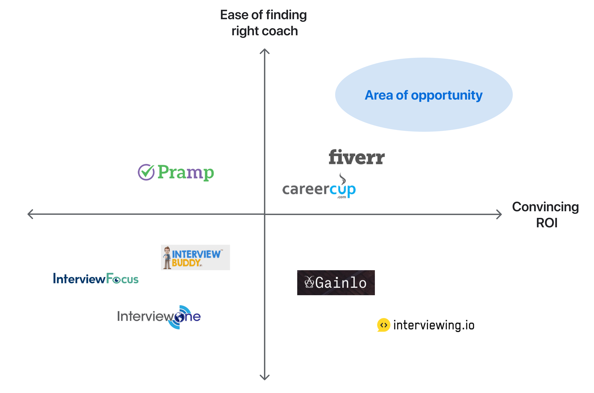
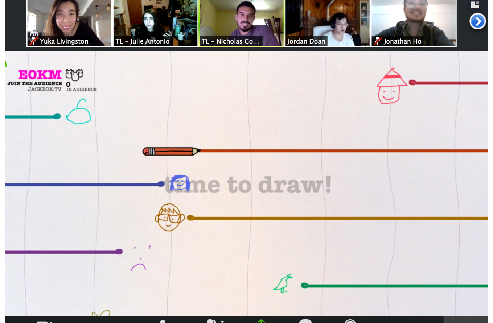

What is InterviewQ?
It’s mock interviews made easy and accessible. Job seekers (“seekers”) can find the right experienced professionals (“coaches”) that have experience in their field and schedule mock interviews with them.

Visualizing market opportunity
Takeaways
- Iterate a lot and keep all the iterations. It’s important to try different design styles until the problem space has been thoroughly explored.
- Test everything for usability. Blindspots will be exposed and assumptions will be validated (or invalidated).
- While designing, keep implementation feasibility in mind. Constant communication with the developers helps here (even if it seems like a small thing).
- ENJOY the process with your team! Building relationships with your team creates good vibes and positivity.

Sometimes we refreshed by playing games!